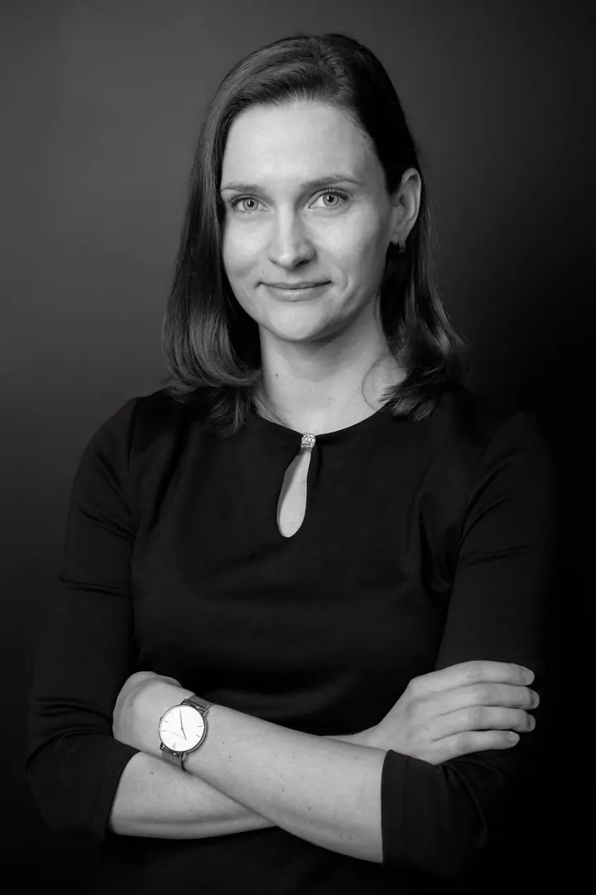
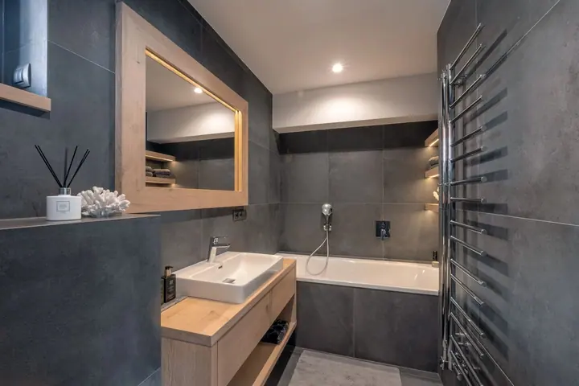
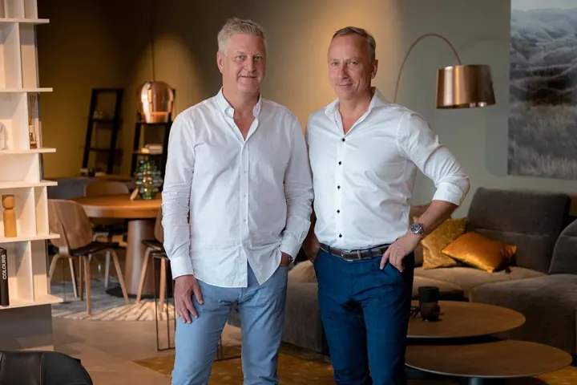

Byty a domy
Fotografie bytů a rodinných domů pro realitní kanceláře, architekty a bytové designéry. U větších bytů a domů nafotím i exteriéry.





Jmenuji se Martin Vítek a pod značkou RK photo fotografuji byty, domy a komerční prostory pro realitní kanceláře, architekty a bytové designéry. Fotím také osobní, profesní a týmové portréty. Najdete mě v Praze, ale fotím i mimo ni.
Více o mně
„Tréma a očekávání je i na mé straně, takže v tom nebudete sami.“
— Martin Vítek
Fotografie bytů a rodinných domů pro realitní kanceláře, architekty a bytové designéry. U větších bytů a domů nafotím i exteriéry.
Obchodní centra, showroomy, kanceláře a kulturní prostory. Prostor nafotím tak, aby vynikla jeho architektura i atmosféra.
Portréty pro web, LinkedIn nebo tiskové materiály, v ateliérovém stylu i přímo ve vašich prostorách.
Společné fotografie firemních týmů a vedení. Cenu připravím individuálně podle velikosti týmu a místa focení.
V sekcích „O mně“ jsem obvykle psal o tom, jak jsem se dostal k fotografii, jak focení vnímám a jak netrpělivě čekám, co se nakonec podařilo zachytit. Jenže na tom vlastně tolik nezáleží.
To hlavní je pokaždé nové, s každým zákazníkem a s každým člověkem, který za mnou přijde. Tréma a očekávání jsou i na mé straně, takže v tom nebudete sami. Pokaždé se snažím udělat maximum, abychom si focení, někdy plánované a někdy trochu improvizované, společně užili.
Ať fotím byt před prodejem, showroom nebo portrét do firmy, platí pro mě slova Alfreda Eisenstaedta, která mi dávají čím dál větší smysl: „Je mnohem důležitější dotknout se lidí, než tlačítka spouště.“
Zavolejte nebo napište, co potřebujete nafotit. U bytů a domů stačí velikost a lokalita, cenu vám řeknu podle ceníku.
Domluvíme den a místo focení. V rámci Prahy je cestovné zdarma, mimo Prahu počítám aktuální sazbu za kilometr.
Přijedu na místo a nafotím interiéry, případně exteriéry nebo portréty. Někdy podle plánu, někdy trochu improvizujeme.
Zpracované fotografie obvykle dodám do jednoho až tří dnů podle počtu zakázek, počítáno od následujícího dne po focení nebo po schválení výběru.
Byt do velikosti 1+kk stojí 1 700 Kč, 2+kk až 3+1 stojí 2 100 Kč a 4+kk až 5+1 stojí 2 800 Kč. Větší byty a rodinné domy včetně exteriérů fotím od 3 300 Kč. Zpracování fotografií je v ceně.
Obvykle do jednoho až tří dnů podle počtu zakázek, počítáno od následujícího dne po focení nebo po schválení výběru.
V rámci Prahy je cestovné zdarma. Mimo Prahu účtuji aktuální sazbu za kilometr, pro rok 2024 to bylo 5,60 Kč/km.
Osobní nebo profesní portrét stojí od 2 000 Kč. Cenu focení týmu připravím individuálně. Nejsem plátcem DPH.